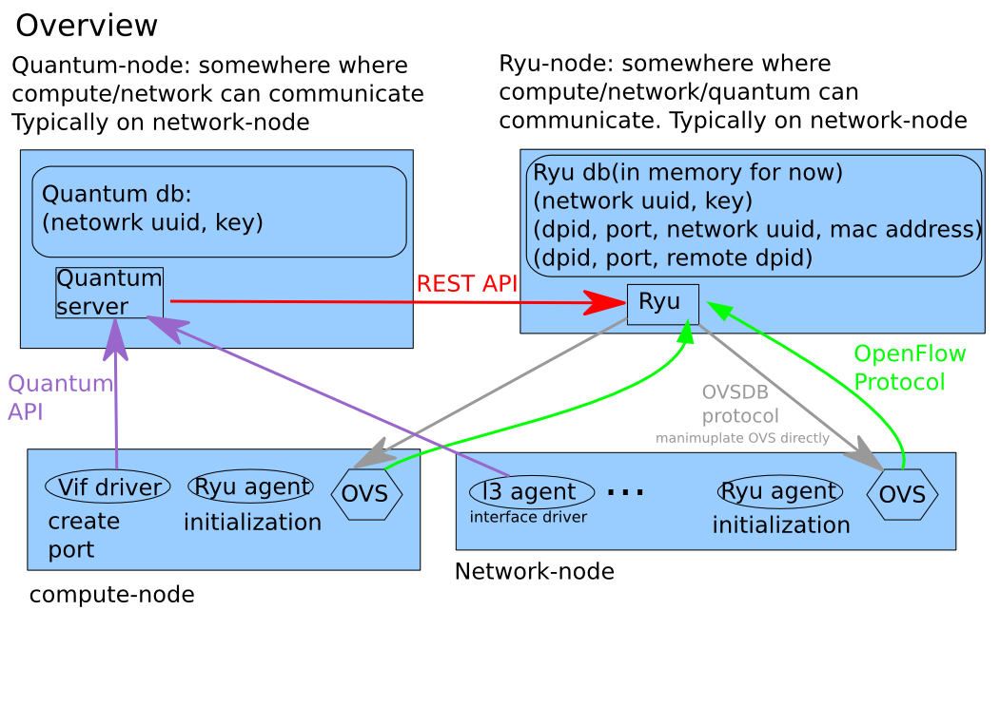
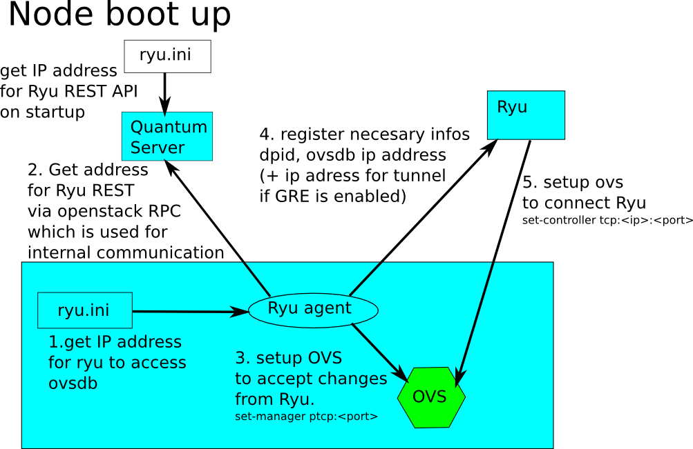
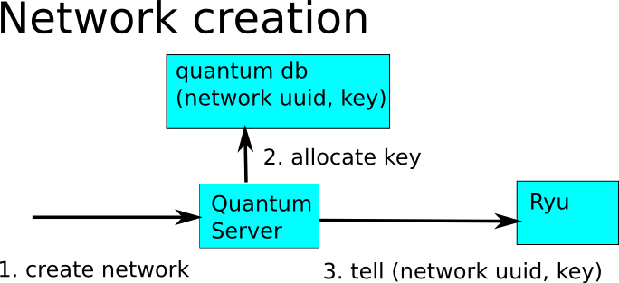
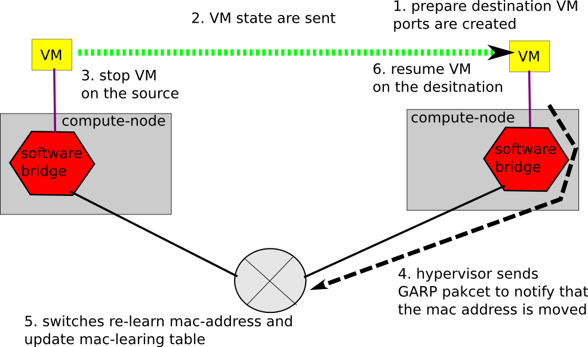
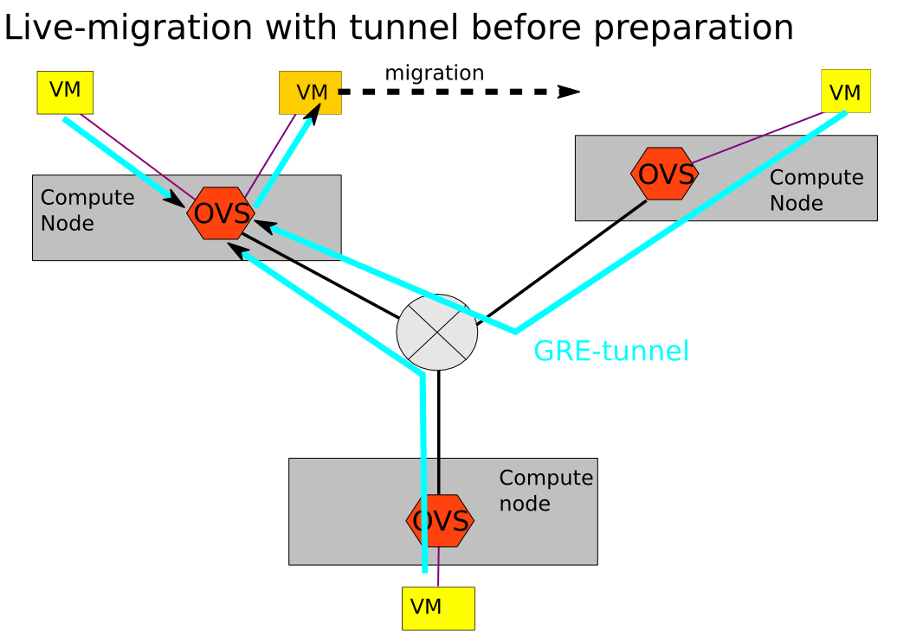
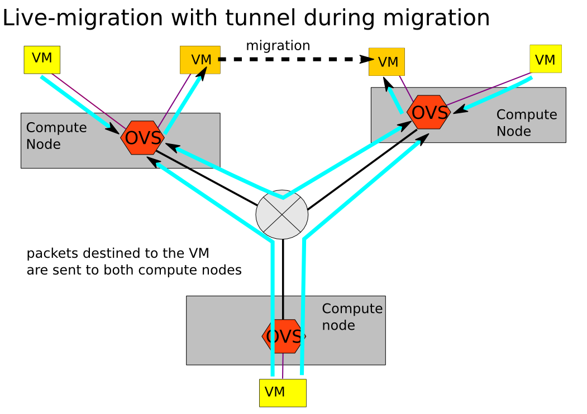

Ryu L2 isolation¶
This section describes how Ryu cooperates with Openstack Quantum and how its L2 isolation works.
Overview¶
Ryu provides REST API by which Quantum server tells necessary informations. Quantum Server manages the association networks(uuid) to actual key value in addition to normal Quantum management informations. (Here key value is an integer for VLAN ID, GRE key and so on. The quantum only have to know the range of key which depends on the isolation technology. For example, 12 bit in VLAN case, 24 bit in GRE case.) Quantum Ryu plugin doesn’t know about what technology Ryu uses for L2 isolation.

Quantum doesn’t necessarily knows all the informations Ryu needs like mac address attached to the interface. Ryu can gather those informations by accessing directly to OVSDB. When tunnel ports on OVS needs to be created on compute-node, Ryu will directly accesses to OVSDB and creates/deletes ports.
Cooperate with Openstack Quantum¶
Ryu reacts to Qauntnum events, compute-node boots up, network creation/deletion, and VM instance creation/deletion. When VM instance is created, corresponding quantum port is created.
compute-node boot up¶
When a compute note boots up, minimal initalization work is done by Ryu-quantum-agent which tell necessary informations to Ryu. Then Ryu set up OVS such that OVS connects to Ryu via OpenFlow. There are 2 steps of OVS initialization. By agent and by Ryu. This is to keep Ryu agent logic minimal and independent from what actual Ryu needs to set. Even if Ryu is enhanced for new feature and some additional configuration to OVS is needed (for example multi-controller for HA), ryu agent doesn’t need to be modified due to 2 step initialization.

network creation¶
When network is created, quantum Ryu plugin assigns Key value to a created network, and tell the association to Ryu

VM instance creation¶
When VM instance is created, quantum port is created. Quantum Ryu plugin tells the association of (network uuid, port uuid) to Ryu, and then OVS port is created. Ryu finds the port creation via OpenFlow and get the information of the created port for (port uuid, attached mac address) via OVSDB protocoal, and then sets up network configuration to OVS.

quantum_adapater RyuApp¶
This application watches port creation/deletion by OF protocol. When it detects the creation of ports, it tries to retrieve related informations(port uuid, mac address) by OVSDB protocol, tries to determine if the port corresponds to Qauntnum VM port, and then stores those informations into the in-memory, which generates the event of VMPort creation. Then Ryu app of isolation (simple_vlan or gre_tunnel) will be notified.
live-migration¶
live-migration is popular feature with virtualization, so as OpenStack. As of this writing, there is no hooks in quantum. So no notification/callback are triggered when live-migration starts/on-going/ends/error-abort. Traditional live-migration uses GARP to tell switches the used mac address is moved.

VLAN¶
OVS supports port vlan with setting tag value in OVSDB. Ryu utilizes it for L2 isolation.
simple_vlan RyuApp¶
When port is created, it sets tag value to key assigned to a given network uuid. And sets flow entry to output:normal.
live-migration¶
As flows includes output:normal action, packets are processed by OVS builtin mac-learning.
- When destination VM port is created, same rule is inserted on OVS on the destination. But the port on the destination is not used until the first GARP packet is sent
- When VM is resumed on the destination, a GARP packet is sent. Then, mac learning tables on each switch are updated. So the port on the source will be unused.
- When the VM on the source is destroyed, the port on the source is also destroyed.
GRE tunneling¶
OVS supports tunneling and Ryu utilizes it for L2 isolation as follows.

tunnel_port_updator RyuApp¶
This application watches the VM port creation/deletion, and creates/deletes tunnel port on OVS when necessary. That is, it creates tunnel port between compute-nodes which have VMs of same tenant. it deletes tunnel ports when compute-nodes have no VMs of same tenant.
gre_tunnel RyuApp¶
This application watches VM/tunnel port creation/deletion, and installs/removes flow entries based on port creation/deletion.

live-migration¶
As flows are aware of mac address of each ports, Ryu updates flow table for live-migration on each compute-nodes. When the port of same mac address is added on another compute-node, Ryu installs flows that duplicates packet so that packets destined to the mac address will be duplicated and sent to both ports. GARP from hypervisor isn’t used.
 
Mac address based L2 isolation¶
Ryu also supports mac address based L2 isolation. In this case key isn’t used.
mac learing¶
When VM sends packets, Ryu determins network uuid from OVS port and then associates src mac address to network uuid.

packet filtering(L2 unicast case)¶
When VM sending L2-unicast packet, Ryu checks if the destination mac address belongs to the same netowrk id of the source mac address which is same to the network uuid that the OVS port is associated to.
If no, the packet is dropped.
If yes, send the packet is sent to ports which belongs to the same network uuid and external port.


packet filtering(L2 broadcast case)¶
When VM sending L2-broadcast/multicaset packet, Ryu checks if the source mac address.
send the packet to all external ports and all OVS ports that belongs to the same network uuid of the source mac address.
When receiving broacast/multicast packet from the external ports, Ryu checks if the source mac address belongs to known network uuid.
- If yes, send the packet to the external ports except incoming one and the all OVS ports that belongs to the network uuid
- if no, drop the packet.
live-migration¶
As of this writing, simple isolation doesn’t support live-migration.